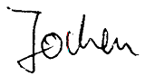

About The Author...
Jochen Duckeck

Dear visitors,
my name is Jochen Duckeck. I am the webmaster and the author of showcaves.com. On this page I want to tell you a bit about me and how I started this website.

 Laichingen, Germany.
Laichingen, Germany.
I have been a member of a German Höhlenverein (caving club) since the age of fifteen.
I once was an active caver, as the historic photographs on this page prove!
Today I am too fat for caving, so I became an  armchair caver.
I am now caving in cyberspace maintaining this site and other speleo websites.
Now and then I do cave trekking tours into grandpa caves.
armchair caver.
I am now caving in cyberspace maintaining this site and other speleo websites.
Now and then I do cave trekking tours into grandpa caves.
My caving club maintains a show cave, the
 Laichinger Tiefenhöhle
(Laichingen Vertical Cave) and I have been volunteer cave guide for many years.
In Germany most caves are maintained by non-profit organizations called Verein, the cave is run solely by volunteers.
We created a museum for speleology in 2001, with exhibition and booklet, and I did the website.
Laichinger Tiefenhöhle
(Laichingen Vertical Cave) and I have been volunteer cave guide for many years.
In Germany most caves are maintained by non-profit organizations called Verein, the cave is run solely by volunteers.
We created a museum for speleology in 2001, with exhibition and booklet, and I did the website.
I have a diploma in Computer Science which I earned at the TU Braunschweig.
Braunschweig (Brunswick), is a city in the northern part of Germany.
There were no caves or caving clubs in this area, the closest caves are located in the
 Harz.
Several interesting caves were in the eastern part of the Harz, on the other side of the Iron Curtain.
After 1989, when the DDR (German Democratic Republic) collapsed, I had the chance to visit them, and collect information about these little known East German show caves.
This was the beginning of those show cave pages.
The first version listing the united German show caves was intended as a printed booklet but was never published.
Harz.
Several interesting caves were in the eastern part of the Harz, on the other side of the Iron Curtain.
After 1989, when the DDR (German Democratic Republic) collapsed, I had the chance to visit them, and collect information about these little known East German show caves.
This was the beginning of those show cave pages.
The first version listing the united German show caves was intended as a printed booklet but was never published.
When I started to work, I moved to the city of Nürnberg (Nuremberg). My first job at the University included the maintenance of the website, in 1993 there were no private web accesses and websites were owned only by institutions like universities. I soon realized, that this was an easy way to publish my show cave data. So, with the permission of my employer, the show cave guide was transformed into webpages and was online since 1993. First only German show caves in German, then the English version and later other countries. Many years later I was able to get my own domain and webspace.
I am interested in cave surveying, but more in the mathematics and the algorithms, than in crawling through narrow passages carrying compass and tape measure.
I already worked with the geometric modelling of three dimensional objects in my diploma thesis (see my paper
3D-Modeling for the Analysis of Range Data).
I am the German delegate for the
UIS Informatics Commission (UISIC)
appointed by the
Verband der deutschen Höhlen- und Karstforscher e.V.
(German Speleological Federation).
And last but not least I am life member of the
National Speleological Society (NSS).
My NSS number is 48284.
Okay, I confess: I became a member only to get the NSS News and discounts on books....

Jochen Duckeck, Archivstr. 11, 90408 Nürnberg, Germany.
E-mail: .
More contact info here.

 Index
Index Topics
Topics Hierarchical
Hierarchical Countries
Countries Maps
Maps Search
Search